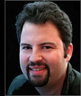

|
Bio  Paul Debevec is a research professor at the University of Southern California and the associate director of graphics research at USC's Institute for Creative Technologies. Debevec's Ph.D. thesis (UC Berkeley, 1996) presented Façade, an image-based modeling and rendering system for creating photoreal architectural models from photographs. Using Facade he led the creation of virtual cinematography of the Berkeley campus for his 1997 film The Campanile Movie whose techniques were used to create virtual backgrounds in The Matrix. Subsequently, Debevec pioneered high dynamic range image-based lighting techniques in his films Rendering with Natural Light (1998), Fiat Lux (1999), and The Parthenon (2004); he also leads the design of HDR Shop, the first high dynamic range image editing program. At USC ICT, Debevec has led the development of a series of Light Stage devices for capturing and simulating how objects and people reflect light, used to create photoreal digital actors in films such as Spider Man 2, Superman Returns, and The Curious Case of Benjamin Button, and Avatar, as well as 3D Display devices for telepresence and teleconferencing. He received ACM SIGGRAPH's first Significant New Researcher Award in 2001, co-authored the 2005 book High Dynamic Range Imaging from Morgan Kaufmann, and chaired the SIGGRAPH 2007 Computer Animation Festival. He serves as Vice President of ACM SIGGRAPH and is a member of the Visual Effects Society, the Academy of Motion Picture Arts and Sciences, and the Academy's Science and Technology Council.
|
{kind=link}